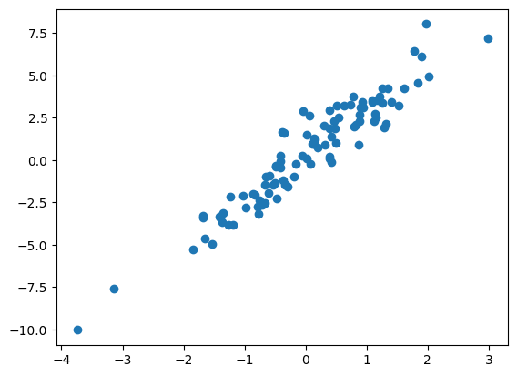
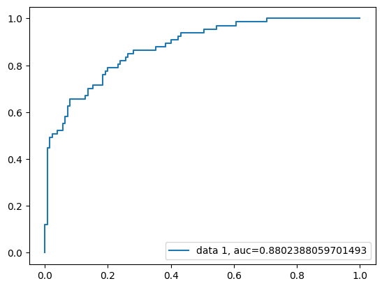

Lab 2: Supervised Learning#
“Do the difficult things while they are easy and do the great things while they are small. A journey of a thousand miles must begin with a single step.” – Lao Tzu
See also
Linear Regression#
import numpy as np
from sklearn.linear_model import LinearRegression as lr
import pandas as pd
import matplotlib.pyplot as plt
samplesize = 100
b = [0.35,2.7]
x = np.random.normal(0, 1, samplesize)
error = np.random.normal(0, 1, samplesize)
y = b[0]+b[1]*np.array(x) + np.array(error)
plt.plot(x,y,'o')
plt.show()

LR = lr()
reg = LR.fit(x.reshape(-1, 1), y)
reg.score(x.reshape(-1, 1), y)
print("Coefficient: ", LR.coef_)
print("Intercept: ", LR.intercept_)
plt.plot(x,y,'o',color='red')
plt.plot(x, LR.coef_*x+LR.intercept_,color='blue')
plt.show
Coefficient: [2.6795092]
Intercept: 0.3224607760017568
<function matplotlib.pyplot.show(close=None, block=None)>
Multivariate linear regression#
from sklearn import datasets
# your example values:
m = 10000
n = 100
random_seed = 42 # for reproducibility, exact value does not matter
X, y, coef = datasets.make_regression(n_samples=m, n_features=n, n_informative=n, n_targets = 1, noise = 10, coef = True, random_state = random_seed)
y = y+6 #add intercept
print(coef)
[74.96113466 2.93986331 14.58506673 79.01739209 15.09938965 37.72594167
70.46542254 71.5561938 20.94138334 37.3912242 44.64766944 10.9255277
41.65861407 25.36115514 27.97183843 9.50461159 18.10593467 21.14662516
87.33989034 35.73258103 21.93626485 32.55422588 74.95809817 0.5363795
88.48327012 77.08878922 56.03943168 62.82658449 46.88494468 16.4038937
83.27750947 2.49654269 73.09779097 18.06219427 57.35549346 29.09474537
43.11468129 63.25788887 14.01517432 48.67540606 0.84115194 9.55092085
50.8043141 82.68617283 2.28217206 40.2144315 64.27644089 55.3769291
84.73036948 88.40489821 64.10795156 87.98333242 89.38967874 77.657785
18.60837041 36.3749496 67.68205678 59.40334439 37.95497342 40.19040592
55.3533318 23.38459897 90.17260756 21.69672497 52.36419314 23.08103093
37.4214363 21.01876373 64.64706419 96.33328647 41.18518575 84.91182137
80.40262408 24.07276256 20.57151397 4.44175302 78.62172946 63.2411135
26.40066897 71.24936987 59.64801617 24.03086424 5.4607237 69.55037268
96.9206204 71.19987438 93.79398472 35.5665652 26.51499825 78.7580468
32.68296277 91.62962268 47.93167209 13.36749881 22.398207 11.72896302
91.640456 51.53049388 24.56826202 40.33597672]
reg = LR.fit(X, y)
print("Coefficient: ", LR.coef_)
print("Intercept: ", LR.intercept_)
Coefficient: [75.07393056 2.7884828 14.61026479 79.01750782 15.03859804 37.77341414
70.48666546 71.46230917 20.82278507 37.41881459 44.69052604 10.94607763
41.79043769 25.42946729 28.06176724 9.40362379 17.91804405 21.05294472
87.34631776 35.73375822 21.84025756 32.72634608 75.1316737 0.3922209
88.43899331 77.23876702 56.00980912 62.92092754 46.81888169 16.43073396
83.14717987 2.44109357 73.00522122 18.28969464 57.21574111 29.16834027
43.09486249 63.34341112 13.85840953 48.55913709 0.71969753 9.31661895
50.91993766 82.6907242 2.15049582 40.13101465 64.19221318 55.48524316
84.8481755 88.30886376 64.16330621 88.04186425 89.33244827 77.54539833
18.55936212 36.56925009 67.60353495 59.28648006 37.8719336 40.13996916
55.27914349 23.47462011 90.11141247 21.61546527 52.37622413 23.23578358
37.33068978 21.22409185 64.66809338 96.3344292 41.20158955 84.93418856
80.46358715 23.92567136 20.68468306 4.53297985 78.43496242 63.22058422
26.43465493 71.24121093 59.76939907 24.12772702 5.42647993 69.52320165
96.85900054 71.00909197 94.02595466 35.44776141 26.44455914 78.6093718
32.69760362 91.71411804 48.02584071 13.43854038 22.38940796 11.79847682
91.63605794 51.39731896 24.57559543 40.29967879]
Intercept: 6.211788767599497
Classification by logistic model#
#import pandas
import pandas as pd
col_names = ['pregnant', 'glucose', 'bp', 'skin', 'insulin', 'bmi', 'pedigree', 'age', 'label']
# load dataset
pima = pd.read_csv("diabetes.csv", header=None, skiprows=1, names=col_names)
pima.head()
| pregnant | glucose | bp | skin | insulin | bmi | pedigree | age | label | |
|---|---|---|---|---|---|---|---|---|---|
| 0 | 6 | 148 | 72 | 35 | 0 | 33.6 | 0.627 | 50 | 1 |
| 1 | 1 | 85 | 66 | 29 | 0 | 26.6 | 0.351 | 31 | 0 |
| 2 | 8 | 183 | 64 | 0 | 0 | 23.3 | 0.672 | 32 | 1 |
| 3 | 1 | 89 | 66 | 23 | 94 | 28.1 | 0.167 | 21 | 0 |
| 4 | 0 | 137 | 40 | 35 | 168 | 43.1 | 2.288 | 33 | 1 |
Selecting Feature#
#split dataset in features and target variable
feature_cols = ['pregnant', 'insulin', 'bmi', 'age','glucose','bp','pedigree']
X = pima[feature_cols] # Features
y = pima.label # Target variable
Splitting Data#
# split X and y into training and testing sets
from sklearn.model_selection import train_test_split
X_train, X_test, y_train, y_test = train_test_split(X, y, test_size=0.25, random_state=16)
Model Fit and Prediction#
# import the class
from sklearn.linear_model import LogisticRegression
# instantiate the model (using the default parameters)
logreg = LogisticRegression(random_state=16)
# fit the model with data
logreg.fit(X_train, y_train)
y_pred = logreg.predict(X_test)
/Users/lliu/Library/Python/3.9/lib/python/site-packages/sklearn/linear_model/_logistic.py:469: ConvergenceWarning: lbfgs failed to converge (status=1):
STOP: TOTAL NO. of ITERATIONS REACHED LIMIT.
Increase the number of iterations (max_iter) or scale the data as shown in:
https://scikit-learn.org/stable/modules/preprocessing.html
Please also refer to the documentation for alternative solver options:
https://scikit-learn.org/stable/modules/linear_model.html#logistic-regression
n_iter_i = _check_optimize_result(
Model Evaluation using Confusion Matrix#
# import the metrics class
from sklearn import metrics
cnf_matrix = metrics.confusion_matrix(y_test, y_pred)
cnf_matrix
array([[115, 10],
[ 25, 42]])
Visualizing Confusion Matrix using Heatmap#
# import required modules
import numpy as np
import matplotlib.pyplot as plt
import seaborn as sns
class_names=[0,1] # name of classes
fig, ax = plt.subplots()
tick_marks = np.arange(len(class_names))
plt.xticks(tick_marks, class_names)
plt.yticks(tick_marks, class_names)
# create heatmap
sns.heatmap(pd.DataFrame(cnf_matrix), annot=True, cmap="YlGnBu" ,fmt='g')
ax.xaxis.set_label_position("top")
plt.tight_layout()
plt.title('Confusion matrix', y=1.1)
plt.ylabel('Actual label')
plt.xlabel('Predicted label')
Text(0.5, 427.9555555555555, 'Predicted label')
Confusion Matrix Evaluation Metrics#
from sklearn.metrics import classification_report
target_names = ['without diabetes', 'with diabetes']
print(classification_report(y_test, y_pred, target_names=target_names))
precision recall f1-score support
without diabetes 0.82 0.92 0.87 125
with diabetes 0.81 0.63 0.71 67
accuracy 0.82 192
macro avg 0.81 0.77 0.79 192
weighted avg 0.82 0.82 0.81 192
ROC curve#
y_pred_proba = logreg.predict_proba(X_test)[::,1]
fpr, tpr, _ = metrics.roc_curve(y_test, y_pred_proba)
auc = metrics.roc_auc_score(y_test, y_pred_proba)
plt.plot(fpr,tpr,label="data 1, auc="+str(auc))
plt.legend(loc=4)
plt.show()
